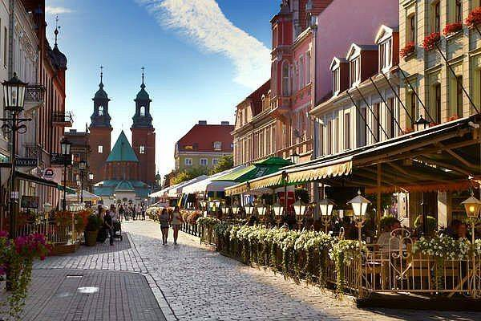
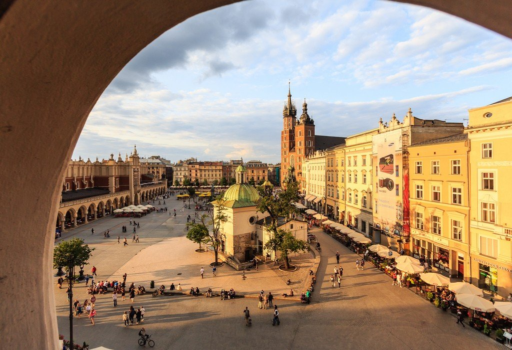

Столицы Польши:
Все знают, что столица Польши — Варшава. Но на протяжении долгой и бурной истории страны столицей бывали и другие города, в том числе довольно неожиданные! Эта статья расскажет о каждом и объяснит, когда и почему они удостоились этого особого статуса.
Прежде, чем мы начнем погружение в историю, отметим, что наше современное представление о столице не вполне применимо к раннему Средневековью, когда польское государство только формировалось (966 год — год Крещения Польши — считается годом его основания)
Гнездо:
Держа в уме разъяснения профессора Новацкого, давайте взглянем на город Гнезно, который считается первой польской столицей. Гнезно — это город в центрально-западной Польше и одно самых старых польских поселений. Наряду с Познанью и Острувом Ледницким Гнезно было одной из основных резиденций первого правителя Польши — Мешко I, жившего в Х веке (точная дата рождения неизвестна, скончался в 992 году).
В 991 году Мешко I создал первый польский документ — написанный на латыни «Dagome Iudex» («Дагоме Юдекс»). В этом документе польский князь просит папу римского позаботиться о его стране, которую Мешко называет «гнезненским государством». В этом усматривается отчетливое указание на то, какое из поселений Мешко I считать главным. Его сын, Болеслав I Храбрый, ставший первым польским королем (Мешко I был лишь князем), отчеканил монету с латинской надписью «гнезненское государство», что также указывает на значение Гнезно в ту эпоху.
Короли польских денег Что за таинственные венценосные особы изображены на польских банкнотах? Culture.pl рассказывает о королях, которые внесли значимый вклад в историю Польши.
По мнению историков, коронация Болеслава I Храброго состоялась в 1025 году в Гнезненском кафедральном соборе (это не точно, но крайне вероятно). Это опять же подразумевает, что в самый ранний период существования польского государства его столицей был город Гнезно. Как бы то ни было, поляки считают, что именно Гнезно был столицей Польши с момента основания государства в 966 году и вплоть до 1039 года.
Краков
Внук Болеслава I Храброго, князь Казимир I Восстановитель, стал править Польшей в 1034 году. Он хотел усилить свое влияние над знатью, но это привело к мятежу. Князю пришлось бежать из страны — сначала в Венгрию, а затем в Саксонию. Словно этого было мало, в 1038 году чешский князь Бржетислав I напал на Польшу и разграбил Гнезно и Познань.
В 1039 году Казимир I смог, наконец, вернуться в Польшу благодаря немецким войскам, посланным его матерью королевой Рыксой Лотарингской, немецкой аристократкой по происхождению. Но возвращаться в Гнезно или Познань, лежавших в руинах, не было смысла. Поэтому Казимир I решил сделать своей главной резиденцией Краков, не так сильно пострадавший в ходе войны.
Когда-то его мать провела много лет в этом городе, предугадав его будущий расцвет. В молодости Казимир сопровождал ее. По мнению историков, на выбор Кракова столицей повлиял тот факт, что город находился на важных торговых путях, а также его близость к Богемии. Последнее позволило бы быстрее реагировать на возможные нападения чехов.
Краков был столицей Польши с 1039 по 1079 год. Но (внимание: спойлер!) это было в первый, но не в последний раз.